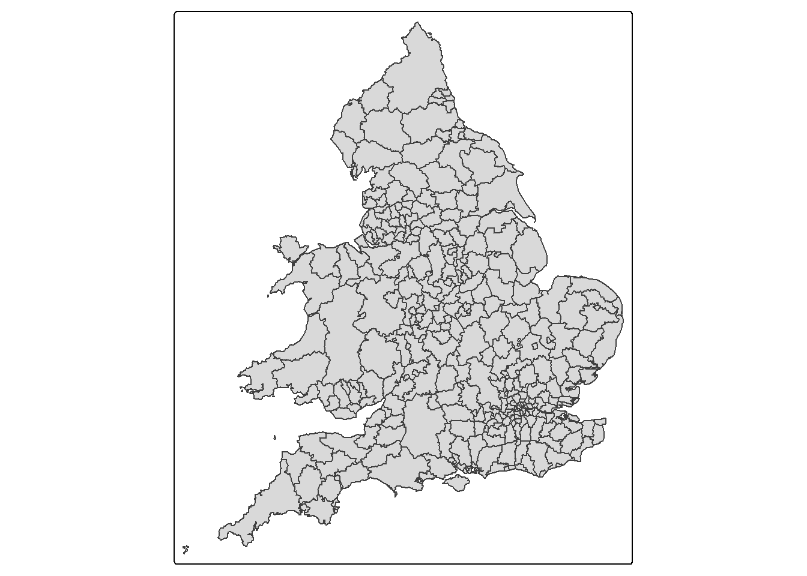
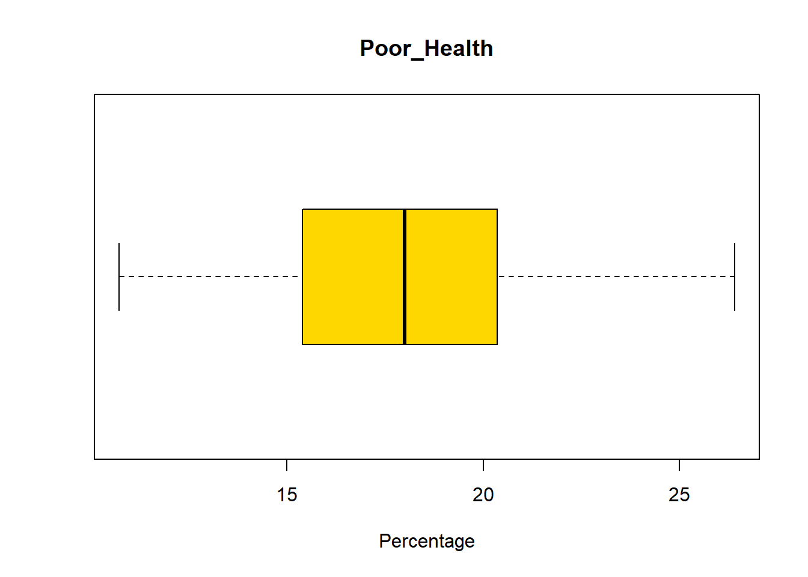
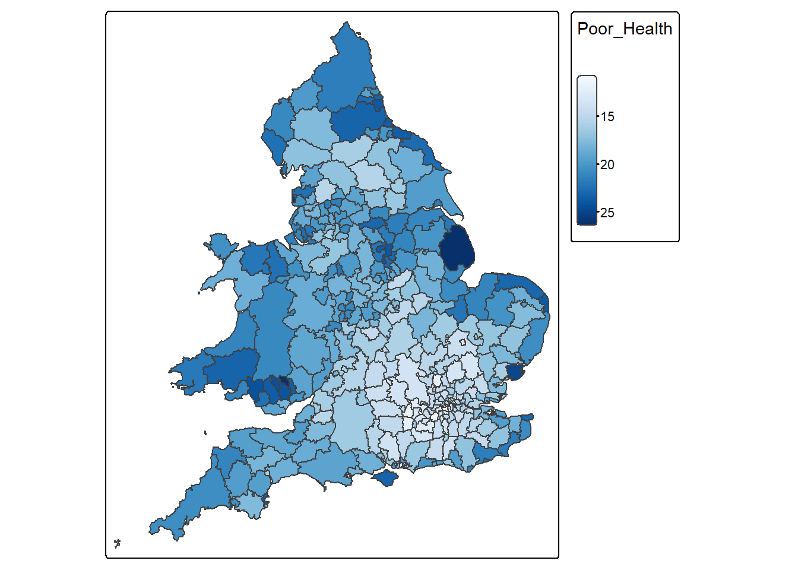
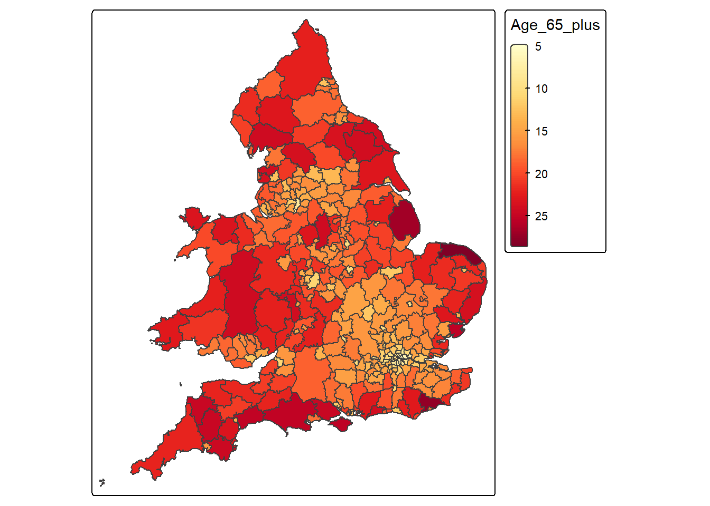
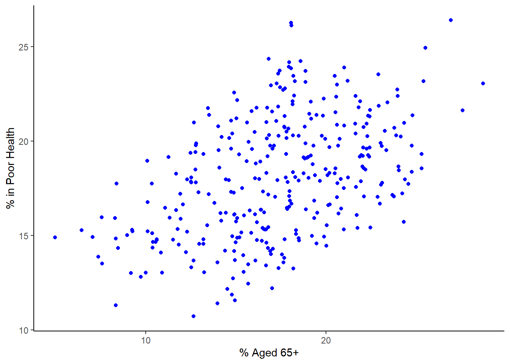
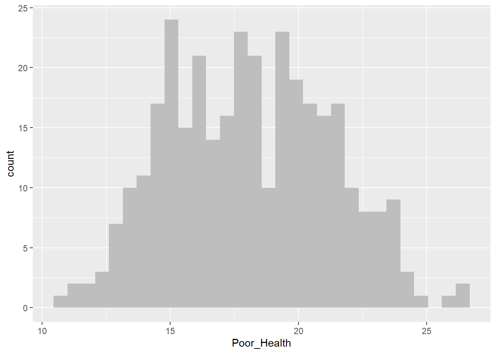
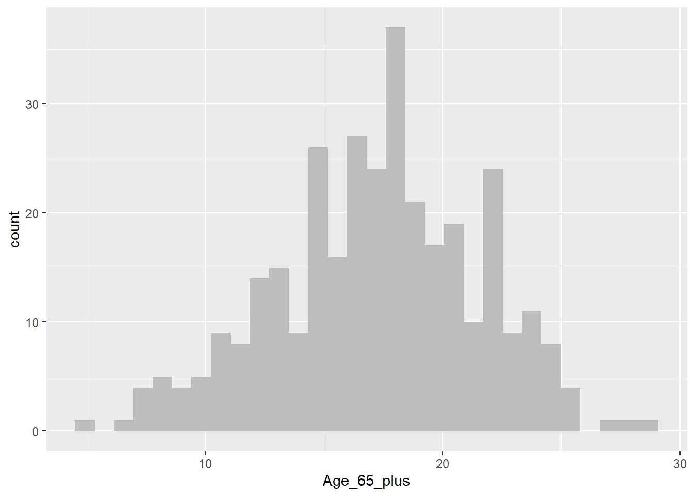
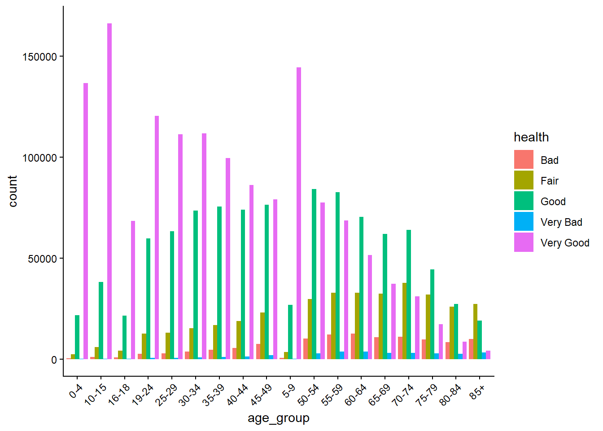
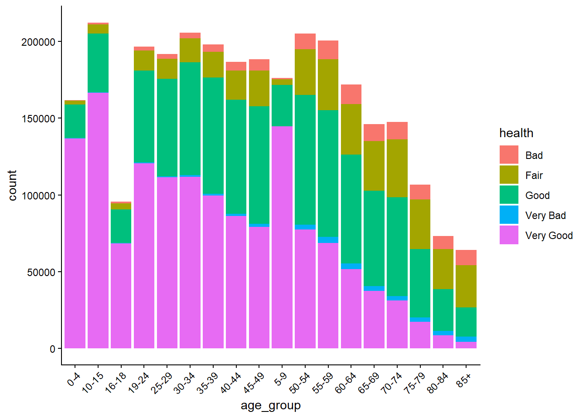

rm(list = ls())4 Lab: Correlation, data reliability and the issue of scale - Health
4.1 Overview
“No society can legitimately call itself civilised if a sick person is denied medical aid because of lack of means.”
(Aneurin Bevan, 1952, In Place of Fear, London: Heinemann.)
Health and wealth are closely connected.
- “The greatest wealth is health.” (Proverb)
- “The richer you are, the better your health.” (Michael Marmot, 2015, The Guardian, 11/09/2015.)
- Poor national health reduces workforce participation, productivity and growth, while increasing demand for health, care and welfare services (Geoffrey Filkin et al., 2024, Health is Wealth, London: The King’s Fund).
This practical explores the geography of health and its relationship to socio-economic conditions. It builds on skills developed in previous weeks and introduces additional analytical techniques.
In particular, you will:
- Link data from two different datasets
- Visualise the relationships between different types of variables
- Calculate appropriate measures of correlation for different types of variables
- Consider Modifiable Areal Unit Problem (MAUP)
4.2 Prepare your working environment
For this Week 4 session, create a sub-folder called Week4 in your ENVS162 folder on your M-Drive. This is exactly the step we did in Weeks 1, 2, and 3.
Download this week’s practical datasets from Canvas Week 4:
- LAD December 2021 EW BUC.geojson
- Census_2021_Districts.csv
- Census_2021_Regions.csv
- Census_2021_Counties.csv
- Census_2021_Wards.csv
- England_Wales_SAR.csv
Open RStudio
Open a new R Script for your Week 4 work, rename it as Week4.R and save it in your newly created Week 4 folder, under M drive -> ENVS162 folder.
Check whether there are any previous left dataframes in your RStudio in the upper-right side Environment pane. You can always use the to clear all the dataframes in your environment and make it all clean. For the same aim, you can click the icon
 , or you can run the below code:
, or you can run the below code:
This command and also the brush icon can both clear RStudio’s memory, removing any data objects that you have previously created.
4.3 Load libraries
Exactly as what we have done for the previous weeks, before starting any analysis in R, we first need to load the essential libraries as all the functions/commands are packed in these libraries. For this week, we will still rely on tidyverse, tmap and sf.
library(tidyverse)
library(sf)
library(tmap)4.4 The Geography of Health (area-level)
4.4.1 Viewing the district level boundaries
The districts dataset is an area-level dataset, in which each row represents one district. Let’s view what this data looks like.
4.4.1.1 Load the district boundaries data
#load the boundary dataset
district_map <- st_read("LAD December 2021 EW BUC.geojson")Reading layer `LAD December 2021 EW BUC.geojson' from data source
`C:\Users\jsmith\OneDrive - George Mason University - O365 Production\Documents\quant\labs\LAD December 2021 EW BUC.geojson'
using driver `GeoJSON'
Simple feature collection with 331 features and 1 field
Geometry type: MULTIPOLYGON
Dimension: XY
Bounding box: xmin: -6.360297 ymin: 49.88234 xmax: 1.763571 ymax: 55.8112
Geodetic CRS: WGS 844.4.1.2 Display on a map
qtm(district_map)
These are just the boundaries of the districts across England.
4.4.1.3 View socioeconomic data at the district level
This data is contained in the Census_2021_Districts.csv file. Let’s load this file and view it’s contents.
districts <- read.csv("Census_2021_Districts.csv",stringsAsFactors = TRUE)The census dataset contains information on each district in England and Wales derived from the 2021 Census.
The dataset contains three sets of variables
LAD21CD to Country - a set of geographic identifiers relating to the location of each district [There is a variable in the district_map]
Density and Mean_Age - two measures: population density (per km^2) and mean age (in years)
Age_0_to_19 to Public_Transport - a set of variables measuring the percentage of persons in each district that fall within the various the categories named by the variables. For example, the variable Age_0_to_19 records the % of persons aged 0 to 19, whilst Public_Transport records the % of persons who commute to work by public transport.
Recall what we should do to familiar ourselves with the dataset? We need to now how many rows and columns of the dataset, what are the variables, what types of these variables, and we may what to view the dataset for a quick scan?
Therefore, we need these functions: dim() or ncol() and nrow(), names(), str(), and View().
# know how many rows and columns
dim(districts)
# know the names of the variables
names(districts)
# know types and examples of these variables
str(districts)
# open a view window to scan the dataset
View(districts)QUESTION 1
How many rows does the districts data have?
Solution: 331
How many columns does the districts data have?
Solution: 56
The districts dataset has a lot of data but it would be useful to visualise this data on a map.
In order to map any of the variables contained in the districts dataset, we need to join them to the district_map dataset using the left_join( ) command. We can link the two datasets using the variable they share in common, LAD21CD, which is the unique identifier given by the Office for National Statistics to each district captured in the 2021 Census.
census_map <- left_join(district_map, districts, by = "LAD21CD")Note that the dataset containing the map boundaries (district_map) MUST be listed before the dataset it is being joined to (districts), otherwise the left_join( ) command will throw an error.
QUESTION 2
Write a line of code that tells you the number of columns in the census_map dataset.
Solution
dim(census_map)[1] 331 574.4.2 The spatial distribution Poor Health
One of the variables contained in the district dataset is Poor_Health, which records the % of persons in each district who self-reported their health as being either ‘poor’ or ‘very poor’.
4.4.2.1 Examining skewness in the data
Let’s now examine the distribution of this data. Recall from week 2 lab that one way to do this is using a boxplot.
boxplot(census_map$Poor_Health,
horizontal=TRUE,
main = "Poor_Health",
xlab='Percentage',
col = "gold")
QUESTION 3
Return to the week 2 lab. Using the information provided, determine whether Poor_Health is skewed or not.
Solution:
Poor_Health is slightly skewed which is evident given that the median line is towards the centre of the plot and the distribution of values before an after this line seems almost identical.
4.4.2.2 Map the spatial distribution of Poor_Health
Use the tm_scale_continuous() option to make sure that areas with the highest rates of poor health have the darkest shading.
Poor_Health_map <-
tm_shape(census_map) +
tm_polygons(
fill = "Poor_Health",
fill.scale = tm_scale_continuous(values = "Blues")
)
Poor_Health_map
Some areas have really high Poor_Health values. Let’s now find out which district have the highest percentage of people with poor health.
census_map %>%
slice(which.max(Poor_Health)) %>%
select(`District`, Poor_Health)Simple feature collection with 1 feature and 2 fields
Geometry type: MULTIPOLYGON
Dimension: XY
Bounding box: xmin: -0.3174608 ymin: 53.00112 xmax: 0.3556274 ymax: 53.52762
Geodetic CRS: WGS 84
District Poor_Health geometry
1 East Lindsey 26.40201 MULTIPOLYGON (((0.2409995 5...4.4.2.3 Map the spatial distribution of Age_65_plus
Age_65_plus_map <-
tm_shape(census_map) +
tm_polygons(
fill = "Age_65_plus",
fill.scale = tm_scale_continuous(values = "YlOrRd")
)
Age_65_plus_map
QUESTION 3
What pattern(s) do you observe comparing the spatial distribution of both variables?
Solution
There is a bit more healthy and younger people in southern places like London and the surroundings compared to more northern areas; this pattern reinforces the idea of the north-south divide.
4.4.3 Visualise associations with a scatter plot
As we’ve seen in previous weeks, another way of visualising the association between two continuous variables is through a scatter plot:
census_map %>%
ggplot() +
geom_point(aes(x = Age_65_plus, y = Poor_Health), colour = "blue") +
labs(x = "% Aged 65+", y = "% in Poor Health") +
theme_classic()
This graph reinforces the impression that older areas tend to have more people in poor health. However, the question still remains, how strong is the association/relationship between these two variables? Remember, as discussed in class, if this was a ‘perfect’ relationship between both variables that those dots would form a straight line. This is not the case but there still seems to be a relationship there. Discuss with your colleague next to you how strong this relationship and see if you agree.
4.5 Measuring the correlation of continuous variables
As covered in this week’s lecture, we can quantify the amount of association between two continuous variables by calculating their correlation. The correct measure of correlation to use (Pearsons or Spearmans) depends on the distribution of the two variables being correlated.
4.5.1 Check if both variables are symmetrical
If both variables are continuous and symmetrically distributed, then the correct measure of correlation to use is Pearson’s product moment correlation coefficient. Alternatively, if one or both of the variables are skewed, the correct measure to use is Spearman’s Rank correlation coefficient.
We can check whether or not Poor_Health and Age_65_plus are symmetrically distributed by visualising their distributions using histograms, and by calculating their skew.
Histogram for Poor_Health
census_map %>%
ggplot() +
geom_histogram(aes(x = Poor_Health), fill = "grey", bins = 30)
Histogram for Age_65_plus
census_map %>%
ggplot() +
geom_histogram(aes(x = Age_65_plus), fill = "grey", bins = 30)
As we’ve seen previously we can use a boxplot to help us determine whether a variable may be skewed or not. However, sometimes this can prove challenging. In cases like this, we can compute a number that tells us how skewed a vaiables is. In this case, we’ll measure skew in the range of -1 to +1, with values closer to 0 being less skewed, and values closer to -1 or +1 being a lot more skewed.
Compute skew for Poor_Health
x <- census_map$Poor_Health
x <- x[!is.na(x)]
mean((x - mean(x))^3) / sd(x)^3[1] 0.1277937Compute skew for Age_65_Plus
x <- census_map$Age_65_plus
x <- x[!is.na(x)]
mean((x - mean(x))^3) / sd(x)^3[1] -0.1794138From the above we can see that although neither variable is perfectly symmetrically distributed (skew = 0), they are both approximately symmetrical (skew in the range -0.5 to +0.5).
4.5.2 Calculate appropriate measure of correlation
Both Poor_Health and Age_65_plus are approximately symmetrically distributed. Therefore the appropriate measure of correlation to use is Pearson’s product moment correlation coefficient. Let’s calculate this correlation coefficient now between these two variables.
cor(census_map$Poor_Health,
census_map$Age_65_plus,
method = "pearson",
use = "complete.obs")[1] 0.4631554From the output above we can see that Poor_Health and Age_65_plus have a Pearsons’s correlation of +0.46. The size of the correlation (0.46) indicates that there is a moderate strength association between the two variables. (A correlation 0 would indicate no association, and a correlation of +1 or -1 would indicate a perfect one-to-one association.) The sign of the correlation (+) indicates that districts with more persons aged 65+ have more poor health.
If one or both variables had been skewed, then we would have needed to calculate Spearman’s correlation coefficient, which can be achieved simply by changing the measure requested from "pearson" to "spearman".
4.5.2.1 Interpretation of Correlation (r) values
| Correlation (r) | Strength | Direction | Interpretation |
|---|---|---|---|
| +1.0 | Perfect | Positive | Variables increase together exactly |
| +0.7 to +0.9 | Strong | Positive | Strong increasing relationship |
| +0.4 to +0.6 | Moderate | Positive | Clear increasing trend |
| +0.1 to +0.3 | Weak | Positive | Slight increasing trend |
| 0 | None | None | No linear relationship |
| −0.1 to −0.3 | Weak | Negative | Slight decreasing trend |
| −0.4 to −0.6 | Moderate | Negative | Clear decreasing trend |
| −0.7 to −0.9 | Strong | Negative | Strong decreasing relationship |
| −1.0 | Perfect | Negative | Variables decrease together exactly |
QUESTION 4
Which statements are correct?
- Pearson’s correlation is a linear correlation.
- a rank-based correlation
- a linear correlation
- a measure of spatial autocorrelation
- a robust estimator of median association
- Spearman’s correlation is a rank-based correlation.
- a rank-based correlation
- a linear correlation
- a measure of spatial autocorrelation
- a robust estimator of median association
- The correlation between Age_65_plus and Poor_Health is +0.46. Does this mean ageing causes poor health? Explain.
Solution
No, correlation does not imply causation. Additional studies would need to be done to confirm this is the case.
4.5.3 Visualising the association between categorical variables
To work with categorical variables we will be using the SAR dataset. However, before you can use this data, you must pass the SAR Data Access test on canvas located in Week 4. this should take no more than a minute or so. After passing the test, you should be able to download the file England and Wales SAR.csv from the Week 4 folder on CANVAS and save it to the same folder as your Week4.R script on your M drive.
Next we need to load the data,
SAR <- read.csv("England_Wales_SAR.csv",stringsAsFactors = TRUE)The SAR dataset contains information on an anonymised 5% sample of respondents to the 2021 Census. Anonymisation strategies range from the obvious (name and address removed) to the less obvious (e.g. the removal of all geography below district-level; the regrouping of age from single year of age to five-year age groups etc.).
The dataset contains a LOT of respondents!
Let’s visualise the relationship between health and one of the variables that we think think helps explain variations in health, such as age_group. This may take up to 30 seconds or so.
SAR %>%
ggplot() +
geom_bar(aes(x = age_group, fill = health),
position = "dodge") +
theme_classic() +
theme(
axis.text.x = element_text(angle = 45, hjust = 1)
)
The clear story told by this graph is that the number and proportion of people in ‘Very Good’ health declines with age.
We can also visualise this as a stacked barchart.
SAR %>%
ggplot() +
geom_bar(aes(x = age_group, fill = health)) +
theme_classic() +
theme(
axis.text.x = element_text(angle = 45, hjust = 1)
)
4.6 Measuring the correlation of categorical variables
Bar graphs can give us some clues, but to be sure we need to quantify the amount of association each pair of categorical variables by calculating their correlations.
When measuring the strength of association between two categorical variables the correct measure of correlation to use Spearmans correlation coefficient or Cramer’s V. Which specific one depends on the nature of the two variables being correlated.
To select the correct measure of correlation for a given pair of categorical variables, you first need to decide whether each variable is nominal or ordinal.
SAR %>%
pull(health) %>%
levels()[1] "Bad" "Fair" "Good" "Very Bad" "Very Good"SAR %>%
pull(marital_status) %>%
levels()[1] "Divorced/partnership dissolved" "Legally partnered, but separated"
[3] "Married" "Never legally partnered"
[5] "Registered Civil Partnership" "Widowed" Since both health and marital_status are not ordinal, it is clear that Cramer’s V should be used.
tab <- table(SAR$health, SAR$marital_status)
chisq <- chisq.test(tab)
n <- sum(tab)
k <- min(nrow(tab) - 1, ncol(tab) - 1)
cramerv <- sqrt(chisq$statistic / (n * k))
cat("Cramér's V =", cramerv, "\n")Cramér's V = 0.1231071 Remember that unlike Pearson’s product moment coefficient and Spearman’s rank, which have values in the range of -1 to +1, Cramer’s V have values between 0 and 1, with 0 representing no association and 1 being a very strong association.
QUESTION 5
Which of the following correctly describes the strength of the above association?
None
Weak
Moderate
Strong
Solution
Weak
4.7 Area-level data analysis traps - MAUP
Recall that the Modifiable Areal Unit Problem (MAUP) is a source of statistical bias in spatial analysis whereby results (e.g., correlations, regression coefficients, summary statistics) change when the spatial units of aggregation are modified, either by altering their scale (size) or their zoning (boundary configuration).
Let’s check this relationship for Poor_Health and Age_65_plus at the Ward, Counties, District, and Region levels
First we’ll need to load the Wards, Counties, and Region data. No need to load the District data because we’ve already done this before.
# Load regions file
regions <- read.csv("Census_2021_Regions.csv",stringsAsFactors = TRUE)
# Load wards file
wards <- read.csv("Census_2021_Wards.csv",stringsAsFactors = TRUE)
# Load counties file
counties <- read.csv("Census_2021_Counties.csv",stringsAsFactors = TRUE)We’ll use Spearman’s rank correlation to quantify the association between Poor_Health and Age_65_plus
Regions.
cor(regions$Poor_Health,
regions$Age_65_plus,
method = "spearman",
use = "complete.obs")[1] 0.3212121Counties
cor(regions$Poor_Health,
regions$Age_65_plus,
method = "spearman",
use = "complete.obs")[1] 0.3212121Districts
cor(districts$Poor_Health,
districts$Age_65_plus,
method = "spearman",
use = "complete.obs")[1] 0.4622558Wards
cor(wards$Poor_Health,
wards$Age_65_plus,
method = "spearman",
use = "complete.obs")[1] 0.2574719In summary, the results above show that the correlation of Poor_Health with Age_65_plus vary by scale as follows:
Scale Spearman
1 Region 0.32
2 County 0.51
3 District 0.46
4 Ward 0.26The correlation is strongest at county level, and decreases with the size of the spatial unit from county to ward. This suggests that at smaller scales, such as wards, there is some process that weakens the relationship between age and health. This process is likely to be some kind of social sorting (e.g. spatial segregation of the rich and poor) which results in some wards containing an unusually high share of healthy or unhealthy elderly. In contrast, there is less social sorting between counties, as each tends to contain a wide variety of persons. The weaker correlation at regional level is probably due in part to how few regions there are, and in part to the stark health and economic divide between regions in the South East of England and the rest of the country.
QUESTION 6
Can you think of any other factors that may help explain the differences in correlation values with scale?
Solution
More variation in local factors related to health such as deprivation, access to adequate health care, types of jobs etc. at more local levels.
4.8 Formative tasks
Task 1
Visualise the association between Poor_Health and Density in the District data for Liverpool
Solution
Step 1: Extract the liverpool data
liverpool <-
wards %>%
filter( District == "Liverpool" )Step 2: Draw scatter plot
liverpool %>%
ggplot( ) +
geom_point( aes( x = Density, y = Poor_Health ), colour = "blue" ) +
labs( x = " Population Density",
y = "% in Poor Health" ) +
theme_classic( )
Task 2
Compute the right correlation measure to association between Poor_Health and Density in Liverpool. Interpret and discuss what the results mean.
Solution
Remember that for numerical values, we need to first check the skewness of each variables.
Step 1: Compute skewness
Poor_Health
x <- liverpool$Poor_Health
x <- x[!is.na(x)]
mean((x - mean(x))^3) / sd(x)^3[1] -0.4132168Density
x <- liverpool$Density
x <- x[!is.na(x)]
mean((x - mean(x))^3) / sd(x)^3[1] 0.1234378The Poor_Health is skewed so Spearman’s Rank should be used
Step 3: Compute Spearman’s Rank
cor(liverpool$Poor_Health,
liverpool$Density,
method = "spearman",
use = "complete.obs")[1] -0.07185762The Spearman’s rank correlation coefficient indicates a weak association between population density and levels of poor health in Liverpool wards. This suggests that changes in density are only weakly related to changes in poor health, and density alone is not a strong predictor of health outcomes.
Task 3
Using the above correlation metric, determine whether MAUP is an issues using all records the data for Wards, Counties, Districts, and Regions for the same variables.
Solution
cor(regions$Poor_Health,
regions$Density,
method = "spearman",
use = "complete.obs")[1] -0.4666667cor(districts$Poor_Health,
districts$Density,
method = "spearman",
use = "complete.obs")[1] -0.1887088cor(counties$Poor_Health,
counties$Density,
method = "spearman",
use = "complete.obs")[1] -0.2344274cor(wards$Poor_Health,
wards$Density,
method = "spearman",
use = "complete.obs")[1] -0.01063299The Spearman correlations differ across wards, districts, counties and regions, demonstrating that the strength (and possibly direction) of the association between population density and poor health depends on the spatial scale of analysis. This variation indicates the presence of the scale effect of the Modifiable Areal Unit Problem (MAUP), whereby statistical relationships are sensitive to the level of spatial aggregation.
Task 4
Compute the skewness between Poor_Health for Districts for all the data and for Liverpool only. Discuss what could be leading these results
Solution
All districts
x <- districts$Poor_Health
x <- x[!is.na(x)]
mean((x - mean(x))^3) / sd(x)^3[1] 0.1277937Liverpool
x <- liverpool$Poor_Health
x <- x[!is.na(x)]
mean((x - mean(x))^3) / sd(x)^3[1] -0.4132168The skewness for all districts is 0.128, which is close to zero, indicating that the distribution of poor health across England and Wales is approximately symmetrical. This suggests that most districts have similar levels of poor health, with only a few districts having higher values. In contrast, Liverpool has a skewness of −0.413, indicating a moderate negative skew. This means that most areas in Liverpool have relatively high levels of poor health, with a few areas having lower levels. This reflects internal inequalities within Liverpool. These results demonstrate how health patterns vary depending on spatial scale.
Task 5
Calculate the interquartile range (IQR) of Poor_Health at the Region, District, and Ward levels and discuss the results as they relate to MAUP.
Remember:
- IQR measures the spread of the middle 50% of values.
- Larger IQR → greater inequality or heterogeneity.
- Smaller IQR → greater smoothing through aggregation
Solution
IQR(districts$Poor_Health, na.rm = TRUE) [1] 4.958409IQR(regions$Poor_Health, na.rm = TRUE) [1] 2.191963IQR(wards$Poor_Health, na.rm = TRUE) [1] 6.021823The interquartile range increases as spatial units become smaller, from 2.19 at regional level to 6.02 at ward level. This demonstrates that aggregation reduces observed variability in poor health. Larger spatial units smooth internal differences, while smaller units reveal greater socio-spatial inequality. This provides clear evidence of the scale effect of the Modifiable Areal Unit Problem (MAUP), whereby statistical properties of data depend on the level of spatial aggregation.